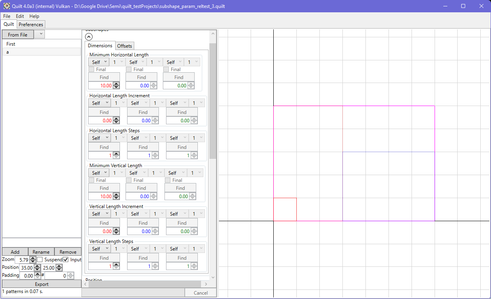
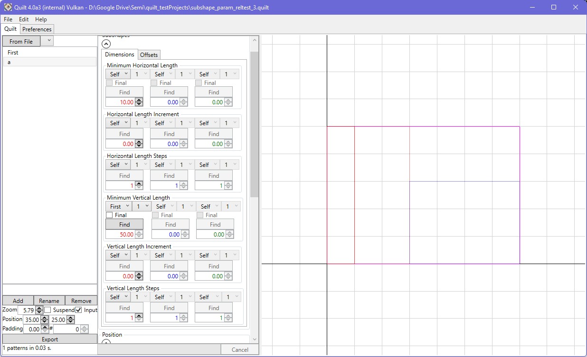
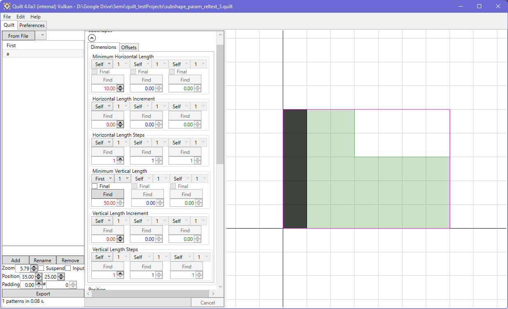
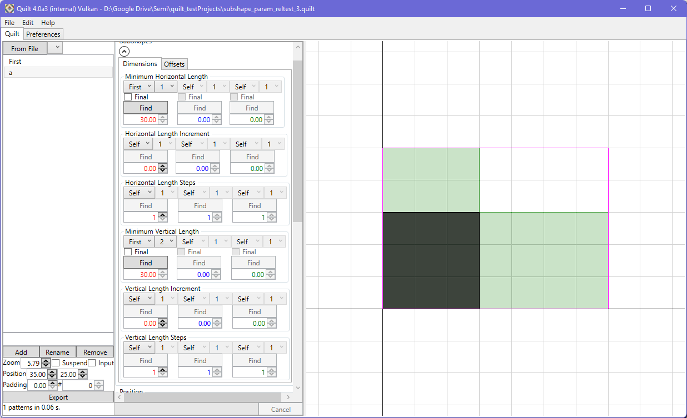
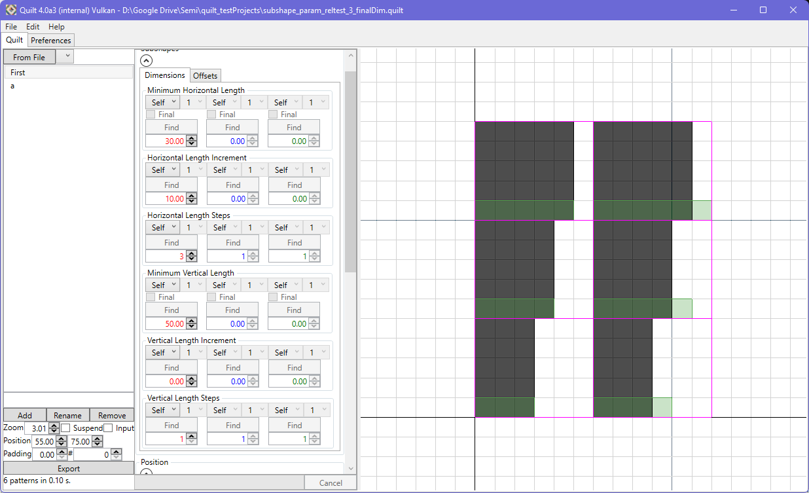
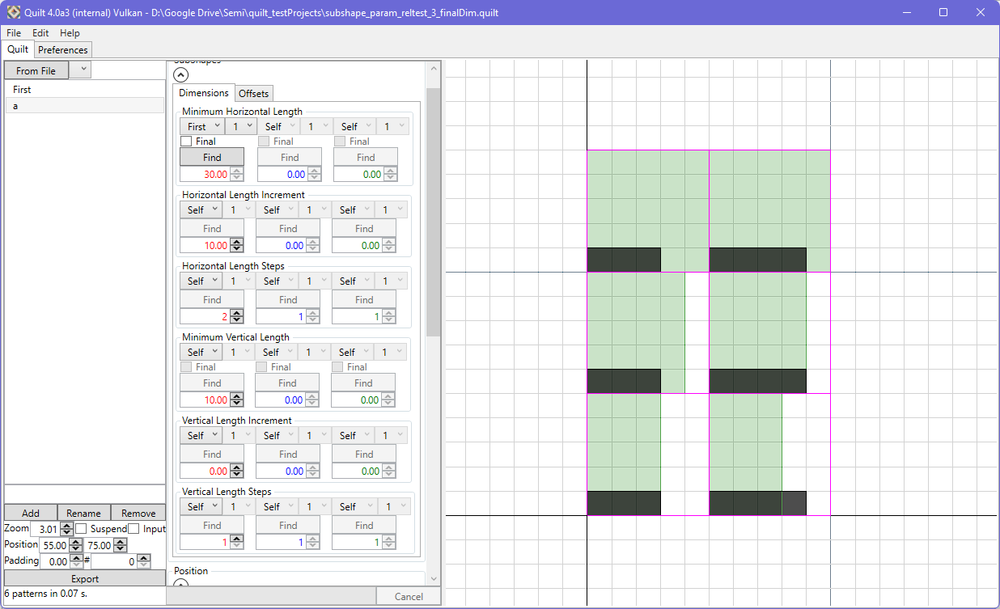

Input parameters can be referenced across pattern elements. References are made to the same type of input parameter, i.e. horizontal length can take a reference from another horizontal length parameter, for any subshape, in another pattern element.
The 'Find' button for any property will become active if a reference is set. The button will then allow you to conveniently jump to the reference itself, making it easier to review or adjust the value. There are similar features in the listbox context menu for the selected element, and from the viewport context menu.
To make a reference to an input parameter from another element in the pattern, choose the pattern from the menu ('Self' indicates the parameter is defined by the pattern element itself) and select the element you wish to establish a reference to.
|  | |
|  |  |
With a reference element chosen, you can also choose which subshape to use on that element.
|  |
An additional control is available to take the 'final' parameter value for the reference element's subshape within the pattern.
|  | |
|  |